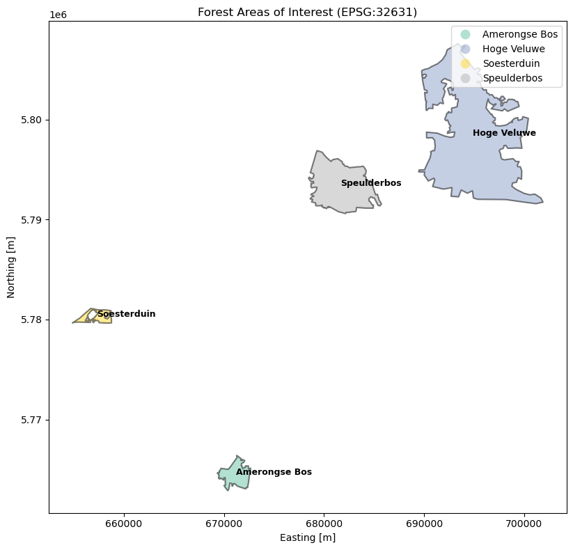
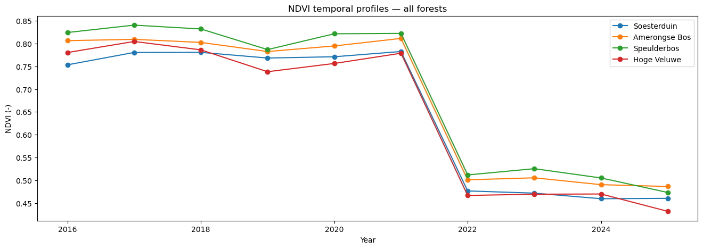
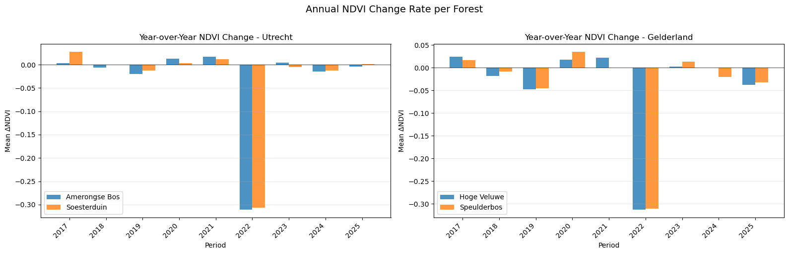

Tracking deforestation in Utrecht & Gelderland through NDVI temporal profiles derived from Landsat imagery.
In 1986, the Dutch government subsidised large-scale tree planting to address a national wood shortage. Since 2013, that trend has reversed — deforestation has consistently outpaced new planting, with forested land converted to heathland and other nature types.
This project investigates how and where these changes have occurred across Utrecht and Gelderland, two provinces with well-documented forest loss.
By analysing satellite-derived NDVI (Normalised Difference Vegetation Index) time series, we detect local variation in forest greenness and identify where change has accelerated or reversed across two windows: 2013–2017 and 2017–2021.

Find local variation between forests using NDVI time series and perform change detection across the study area. We compare forest greenness trends across two time periods to determine whether deforestation rates have shifted in direction or magnitude.
To what extent do NDVI temporal profiles differ between forests within Utrecht and Gelderland, and did the rate or direction of change shift between the 2013–2017 and 2017–2021 periods?

Forests in the Dutch provinces of Utrecht and Gelderland, covering the period 2013 to 2025. NDVI is derived from Landsat 7, 8, and 9 multispectral scenes sourced through Microsoft's Planetary Computer.
Derived from near-infrared and red spectral bands across all Landsat scenes.
Greenness trends tracked across 2013–2017 and 2017–2021 windows.
Identifying deforestation hotspots from shifts in NDVI signal over time.
Spatial statistics and machine learning applied to detect and explain local patterns.

Three MSc Applied Data Science students at Utrecht University, collaborating on this INFOMSSML 2026 term project.
MSc Applied Data Science, Utrecht University
MSc Applied Data Science, Utrecht University
MSc Applied Data Science, Utrecht University
Dr. SM Labib — Course coordinator, Dept. of Human Geography & Spatial Planning
Dr. Menno Straatsma — Dept. of Physical Geography